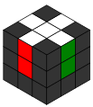

Der erste und gleichzeitig intuitivste Lösungsschritt besteht daraus ein Kreuz auf der weißen Seite zu bilden.

Fertiges weißes Kreuz
Dafür suchst du dir einen Kantenstein, der eine weiße Seite hat. Diesen bringst du an die weiße Mitte heran, dabei können diese zwei Fälle auftreten:
(Kantenstein passt zur Mitte) (Kantenstein ist mit anderer Farbe an Mitte)
Beim ersten Fall suchst du dir den nächsten Kantenstein und wiederholst es so lange bis alle vier Kantensteine um die Mitte herum weiß sind.
Im zweiten Fall musst du den Kantenstein noch kippen, dafür gibt es schon den ersten Algorithmus, wobei dieser Schritt auch intuitiv funktioniert, probier es also ruhig erst mal ohne Algorithmus hinzubekommen.
Mit dem gekippten Kantenstein auf der rechten Seite führe folgende Bewegungen aus:
R' F D F' 2R
Als nächstes musst du darauf achten, das die Kantensteine zu zwei Seiten gehören, also nicht nur weiß, sondern auch ihre zweite Farbe am richtigen Ort sein muss.
Sie ist dann am richtigen Ort wenn sie mit dem angrenzenden Mittelstein übereinstimmt.
Erstmal kannst du die weiße Seite um sich selbst drehen, um zu schauen in welcher Position schon Kantensteine die richtige Position haben.
Die falsch liegenden Steine kannst du dann mit ihrer jeweiligen Seite auf die gelbe Seite bringen und dann die gelbe Seite so weit drehen, dass die zweite Farbe des Kantensteins an der passenden Mitte liegt.
Mit dieser neuen Seite bringst du den Stein wieder auf die weiße Seite und sortierst so auch die anderen Kanten in die richtigen Positionen.